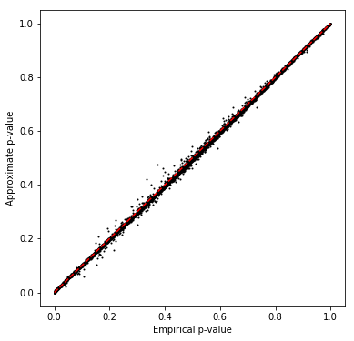
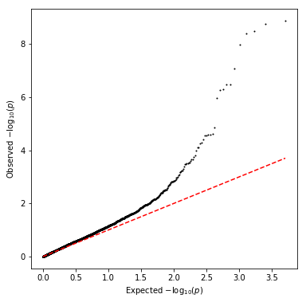

QTL mapping pipeline
Call variance-QTLs from sample variances
umi = pd.read_table('/project2/mstephens/aksarkar/projects/singlecell-qtl/data/scqtl-counts.txt.gz', index_col=0) annotations = pd.read_table('/project2/mstephens/aksarkar/projects/singlecell-qtl/data/scqtl-annotation.txt') keep_samples = pd.read_table('/project2/mstephens/aksarkar/projects/singlecell-qtl/data/quality-single-cells.txt', index_col=0, header=None) keep_genes = pd.read_table('/project2/mstephens/aksarkar/projects/singlecell-qtl/data/genes-pass-filter.txt', index_col=0, header=None) umi = umi.loc[keep_genes.values.ravel(),keep_samples.values.ravel()] annotations = annotations.loc[keep_samples.values.ravel()] keep_inds = annotations.groupby('chip_id').apply(lambda x: len(x) >= 50)
var = umi.groupby(annotations['chip_id'].values, axis=1).agg(np.var)
Normalize the variance matrix analagous to the bulk data.
<<r-wrappers>> var = var.loc[:,keep_inds].transform(lambda x: (x - x.mean()) / x.std(), axis=1).apply(qqnorm, axis=0)
Compute principal components of the mean matrix.
covars = pd.DataFrame(skd.PCA(n_components=10).fit(log_mean).components_, columns=log_mean.columns) covars.index.name = 'id' covars.to_csv('/scratch/midway2/aksarkar/singlecell/scqtl-mapping/log-mean-pcs.txt', sep='\t')
Write out the phenotype file for qtltools. Hold out even chromosomes while
optimizing the power to detect eQTLs.
<<get-gene-info>> <<write-pheno-def>> write_pheno_file(var, gene_info, '/scratch/midway2/aksarkar/singlecell/scqtl-mapping/var.bed', holdout=True)
Index the phenotype file.
Submitted batch job 44400373
Run qtltools.
Submitted batch job 44400375
Read the output.
<<read-qtltools-def>> var_qtls = read_qtltools_output('scqtl-mapping/var')
Check the beta approximation to the permutation p-values.
<<plot-approx-perm-def>>
plot_approx_permutation(var_qtls)

Plot a QQ plot of the permutation p-values.
plt.clf() plt.gcf().set_size_inches(6, 6) plt.scatter(-np.log10(np.arange(1, 1 + var_qtls.shape[0]) / var_qtls.shape[0]), -np.log10(var_qtls['p_beta']), s=1, c='k') plt.plot([0, np.log10(var_qtls.shape[0])], [0, np.log10(var_qtls.shape[0])], c='r', ls='--') plt.xlabel('Expected $-\log_{10}(p)$') _ = plt.ylabel('Observed $-\log_{10}(p)$')

Take QTLs at FDR 10%.
var_qtls['fdr_pass'] = bh(var_qtls['p_beta']) < .1 var_qtls['fdr_pass'].sum()
43
Write out the QTLs.
log_mean_qtls.to_csv('/scratch/midway2/aksarkar/singlecell/scqtl-mapping/log-mean-qtls.txt.gz', compression='gzip', index=False, sep='\t')